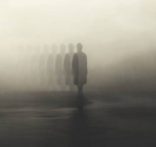
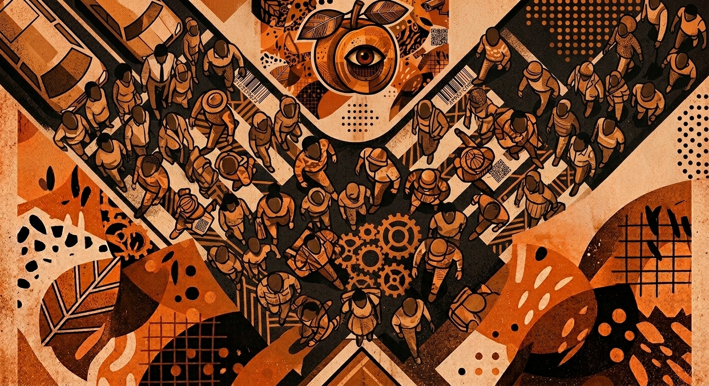

Dans une cité uniformisée, plongée sous une brume permanente, où chaque individu est poussé à « traverser la rue » pour trouver du travail, Gart Jeffries, un marionnettiste solitaire et contemplatif, mène une existence paisible en marge du système. Mais lorsqu’il est rattrapé par le système, la mécanique de son quotidien vole en éclats, et sa lutte pour préserver sa liberté le mène à une révélation vertigineuse : il est lui-même le personnage d'une fiction dont son insoumission n’est qu’une illusion, guidée par la main d’un auteur dont il doit briser le cycle.
L’Homme qui ne voulait pas traverser la rue est une satire sociale sur le fatalisme, l'aliénation par le travail, l’anesthésie des esprits, le consentement aux normes absurdes, le sacrifice de la liberté individuelle et l’art comme ultime sursaut d’insoumission... Rien que ça.
Dans une cité monolithique plongée sous une brume permanente, le simple fait de traverser la rue n’est plus un acte ordinaire. Cela signifie désormais « trouver du travail ». C’est devenu un impératif : signer un contrat quand on traverse la rue, distribué à la volée par des Colporteurs. Si l’on traverse quatre fois, on accumule quatre contrats de travail distribués au hasard — on s'improvise alors coiffeur, mécanicien ou comptable dans la minute, sans la moindre formation. C'est toute l'absurdité du système.
Dans ce monde, traverser la rue est une obligation, une nécessité à laquelle personne n’échappe. On traverse la rue. C’est tout. Du « traversage » d’État. C’est un virage radical que notre peuple a pris il y a plusieurs années, et ce peuple-là n'a aucunement l’intention de revenir en arrière. Ce n’est pas dans ses projets, au peuple... et il serait fort probable qu’il n’en ait plus aucun. Ce peuple-là, il lui faut avancer. À bons coups de progrès on lui dit d’avancer. Alors il avance, sans jamais se questionner sur sa direction. On les appelle les Traverseurs.
Au milieu de cette foule aliénée, Gart Jeffries fait figure d'exception. Marionnettiste reclus dans son appartement, il est parvenu à s’affranchir de cette règle implacable. Il a trouvé le moyen de survivre sans jamais traverser la rue. Dans la pénombre de son atelier, il insuffle la vie à des figurines en bois façonnées par Charlotte, sa compagne sculptrice et seule figure d'espoir dans ce monde mécanique. Gart crée ainsi de petits spectacles poétiques complets qu'il vend à un intermédiaire, Guillaume Gamelin, tirant ses revenus de cet accord tacite sans jamais traverser la rue.
Depuis sa fenêtre ou au cours de ses sorties sur le trottoir, Gart observe avec ironie le spectacle de cette société absurde. Mais le système le rattrape sous les traits du Persécuteur, un agent de l'institution dirigeante (le « Noyau »). Jour après jour, cet agent le harcèle, lui rappelant qu’une occupation abusive du trottoir est une infraction passible d'amende. Parallèlement, Gart croise la route d'un voisin énigmatique, Monsieur Chenin, qui lui murmure à demi-mot d'étranges vérités sur le Traversage et l'exhorte à « clore l'histoire ».
Un premier basculement s'opère à travers une séquence onirique en stop-motion (animation qui tranche avec le reste du film tourné en prises de vues réelles) : dans un rêve aux allures d'appel à la révolte, la marionnette d'Elasis rend vie d'elle-même, libère ses congénères du joug de puissants personnages et massacre un roi et ses convives autour d'un banquet.
Ébranlé par cette vision et la pression qui s'intensifie, le récit plonge alors dans le passé de Gart à travers une série de réminiscences. On découvre son parcours vers l'autonomie et ses tentatives passées pour s'insérer : une litanie de métiers absurdes, le rejet d'une première relation amoureuse superficielle, puis la rupture progressive avec ses amis parfaitement alignés sur le système, ainsi que son cadre familial axé sur le culte du statut, mené par un père dogmatique, obsessionnel de la norme. Ces souvenirs mettent également en lumière l'émergence progressive du Traversage, instauré par à-coups, mais aussi le refus viscéral de Gart de se soumettre à la logique du travail compulsif. C'est au terme de cet affranchissement qu'il avait rencontré Charlotte, son ultime refuge.
Le présent rattrape Gart, et une faille s’ouvre dans sa routine lorsqu'il découvre le pot aux roses : ses spectacles de marionnettes ne sont pas diffusés au grand public. Guillaume Gamelin fait lui-même partie du Noyau, et les créations de Gart servent de divertissement exclusif aux élites qui exploitent le peuple.
Pris de panique et rongé par l'angoisse, Gart réalise que son havre de paix n'est qu'une illusion. Il tente d'alerter Charlotte pour s'enfuir avec elle, mais la jeune femme, satisfaite de leur confort poétique, refuse de l'écouter. Désespéré, Gart la quitte. Dans un accès de rage, il saccage son propre appartement et tranche symboliquement les fils de toutes ses marionnettes. Il confronte ensuite Guillaume dans un grand restaurant, rejetant définitivement ce système de manipulation, avant d'être à nouveau rattrapé par le Persécuteur.
Lors d'un ultime dialogue avec le Persécuteur, Gart comprend enfin les messages cryptiques de Monsieur Chenin. Le film opère son basculement majeur. Gart prend conscience de sa propre nature. D'abord initié par un narrateur omniscient, le récit s’est infléchi lorsque sa créature (Gart), devenue autonome, s’est emparée de l’histoire pour s’inventer sa propre vie. Mais Gart comprend le piège : sa vie entière, sa résistance et sa fuite ne font qu’alimenter une boucle narrative infinie. Tant qu'il refuse d'avancer et s'obstine à parler, le récit tourne en boucle... et le film pourrait durer cent heures. Pour briser ce cycle, se libérer et mettre un terme définitif à cette fiction sans fin, il n'y a qu'une seule issue : clore le récit en traversant. Gart prend une profonde inspiration et amorce son premier pas sur la chaussée.
Au moment précis où Gart pose le pied sur la route, le récit bascule sur Charlotte. Guidée par des hommes silencieux jusqu'à une barque, elle traverse la brume au fil de l’eau, pour accoster dans une clairière baignée de lumière. Elle y retrouve Gart, immobile. Sous un pommier, elle cueille un fruit et le croque. Le craquement net de la pomme résonne dans le silence, immédiatement suivi par une coupe au noir.
Puis, le bruit mécanique des touches d'une machine à écrire rompt l'obscurité. Dans un décor réel, un auteur d'une quarantaine d'années tape les derniers mots de son scénario : « Le craquement net de la pomme résonne dans le silence. FIN ». Il rassemble la liasse intitulée L’Homme qui ne voulait pas traverser la rue, la glisse dans une enveloppe et sort dans la rue.
Après avoir posté son manuscrit, l'Auteur s'arrête au bord du trottoir, allume une cigarette et traverse à son tour d'un pas assuré. De l'autre côté, un colporteur lui tend un document qu'il ouvre aussitôt : un contrat d'embauche portant le titre de « Scénariste ». Dans un rire franc, l'Auteur s'enfonce dans la foule tandis que le monde réel s'efface pour repasser en stop-motion, scellant la boucle d'une création perpétuelle.
Le récit se referme sur une mise en abyme troublante : l’histoire elle-même devient un objet fabriqué, questionnant la place de l’auteur, du personnage et du spectateur dans ce monde absurde.
Marionnettiste reclus qui vit en marge de la société (on les appelle « Réfractaires »). Toujours habillé avec une élégance sobre (chemise et pantalon à pinces). Gart est un homme méticuleux, contemplatif, lucide et mélancolique. Il refuse la comédie sociale du « traversage » et exprime sa vision du monde à travers ses marionnettes (dont l'héroïque pantin Elasis). S'il observe le monde avec ironie, il n'incarne pas une résistance politique armée, mais un repli poétique.
Sculptrice sur bois aux cheveux blond vénitien, à l'esprit vif et mordant. Elle fabrique les figurines de Gart. Plus instinctive, plus libre et d'une légèreté provocatrice, elle incarne une figure d'espoir et d'altérité. Elle introduit une possibilité d'évasion spirituelle, bien que sa trajectoire demeure incertaine.
Homme vif, pressé et pragmatique. Il exploite le talent créatif de Gart en prétendant vendre ses spectacles au grand public, tout en lui imposant une cadence de production industrielle. Il incarne le rouage de récupération du Noyau, transformant l'art subversif de Gart en pur divertissement pour les élites.
Traqueur méticuleux vêtu d'un uniforme orange éclatant portant l'inscription « Celui qui ne lâchera jamais Gart ». Il harcèle Gart au quotidien sous prétexte d'appliquer l'article de loi n°9 (« occupation abusive du trottoir »), incarnant l'absurdité de la bureaucratie triomphante.

Ce film naît d’un malaise contemporain et d’un constat très concret : celui d’un monde où l’on répète qu’il suffirait de « traverser la rue » pour trouver sa place, comme si l’existence humaine se resumait à une simple injonction managériale. J’ai voulu prendre cette formule au pied de la lettre et la pousser jusqu’à l’absurde pour façonner un système totalitaire doux, invisible et grotesque, où chacun devient complice de sa propre aliénation.
Sans basculer dans une science-fiction spectaculaire, le récit installe un léger glissement du réel. Nous décrivons une société à peine décalée de la nôtre où l'injonction est devenue une norme intériorisée : chaque traversée de la rue déclenche l'attribution automatique d'un travail par les Colporteurs du Noyau. Le film s'articule ainsi à la frontière de trois registres : un réalisme social ancré dans la pression professionnelle, une mécanique absurde kafkaïenne, et une fantasmagorie poétique où la réalité se fissure.
La portée philosophique du récit réside dans la dénonciation d'une bureaucratie déshumanisée qui érige l’absurde en outil de contrôle absolu. Le Noyau ne cherche pas seulement à régenter le travail, il régit l'existence entière : du temps accordé aux repas jusqu'à la manière d'exécuter une danse ridicule pour décrocher un contrat. Plus ces règles deviennent humiliating et déconnectées du réel, plus le système se nourrit de sa propre absurdité — transformant chaque détail du quotidien en un test de docilité automatisée. La véritable prison n'est pas l'oppression physique, mais la soumission aveugle à des règles qui ne font plus aucun sens.
À travers le protagoniste, Gart, je m’intéresse à la figure du réfractaire. Gart n'est pas un héros révolutionnaire (au sens traditionnel), mais un individu incapable, presque physiquement, d’adhérer à la comédie qui l’entoure. Il comprend les règles, mais refuse de les exécuter. C’est ce décalage fragile qui m’anime : ce moment où l’on cesse de croire au système tout en restant pris au piège de sa propre marge. Lorsqu'il découvre qu'il a été dupé par Guillaume Gamelin, sa quête prend un tournant absurde : comment traverser la rue… sans se faire attribuer un travail ?
Gart croit préserver sa liberté en fabriquant ses marionnettes dans son coin et en refusant de traverser la rue. Mais son drame réside dans l'illusion : en se repliant sans combattre la machine, son art finit par être digéré, instrumentalisé et récupéré par le Noyau pour le simple divertissement de l'élite. Dès lors, une question affleure : l'art et la poésie peuvent-ils être une vraie forme de résistance, ou ne sont-ils qu'un refuge inoffensif ?
La marionnette interroge directement notre rapport au contrôle et à la mise en scène de soi. Elle devient la métaphore centrale du récit : qui manipule qui ? Sommes-nous encore réellement auteurs de nos propres gestes ? À travers cette création, Gart occupe une position complexe et vertigineuse : il est tout à la fois artiste, témoin, instrument du Noyau (par l’intermédiaire de Guillaume), et finalement fiction lui-même. La mise en abyme finale vient poser la question ultime du film : si tout est déjà écrit par une force supérieure ou un système invisible, que reste-t-il de notre liberté individuelle dans un monde entièrement déterminé ?
Le fatalisme et l’aliénation consentie : la traversée de la rue symbolise l’obéissance aveugle aux exigences d'un système dont la seule finalité est d'exercer sa propre puissance. Le rendement importe peu : seule compte l'acceptation de la règle, quelle qu'en soit l'absurdité. En refusant de traverser, Gart pense préserver sa liberté, mais sa passivité le maintient dans une autre forme de prison.
L'art comme résistance et marchandise : le spectacle de marionnettes est le dernier bastion de la poésie, mais le récit montre comment l'institution (le Noyau / Gamelin) parvient à récupérer et instrumentaliser la création subversive.
La transmission familiale : la séquence du repas familial illustre la violence psychologique d'une morale hypocrite léguée par les générations précédentes pour étouffer toute individualité.
Mon ambition est de proposer une fable visuelle ambitieuse, absurde, sombre et profondément humaine, reposant sur un dérèglement progressif et un contraste plastique fort. Un monde d’abord reconnaissable et banal qui se déforme peu à peu sous le poids d'une dualité esthétique marquée :
L'intrusion du stop motion et du théâtre d'objets constitue un temps fort à haute valeur artistique. Cette rupture de texture tranche net avec la prise de vues réelles pour matérialiser le conte d’Elasis ainsi que la mise en abyme de l'esprit de Gart. L'hybridation des matières — la réalité poisseuse du live-action face à la précision mécanique de l'animation — transforme le film lui-même en une matière vivante, manipulée, miroir direct de la thématique de la marionnette.